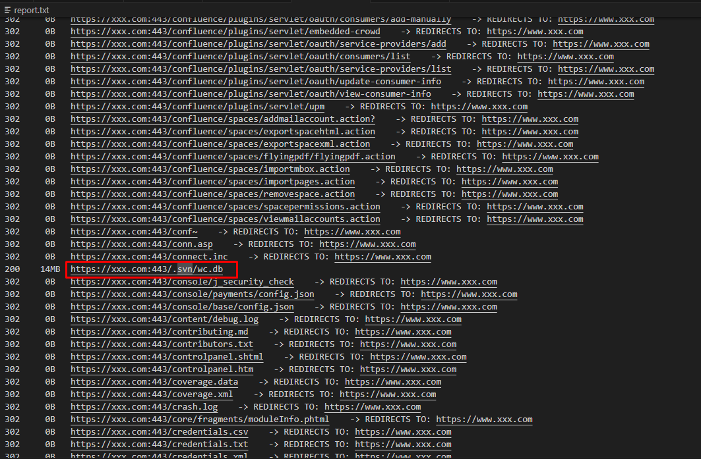
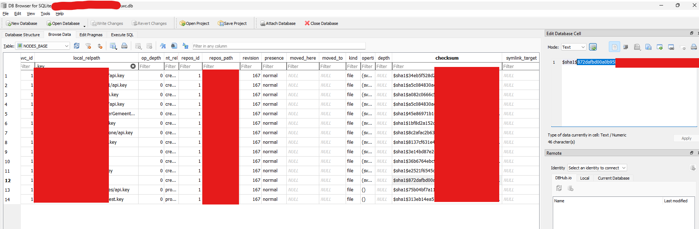
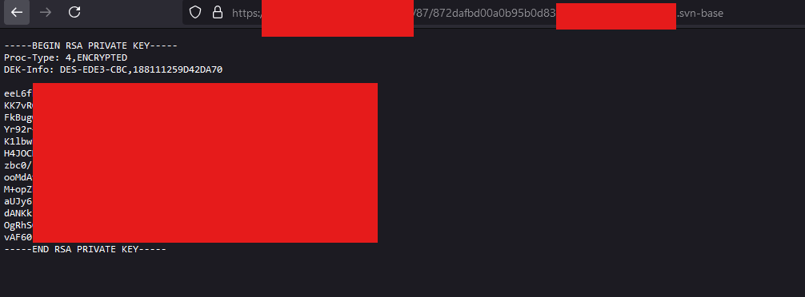
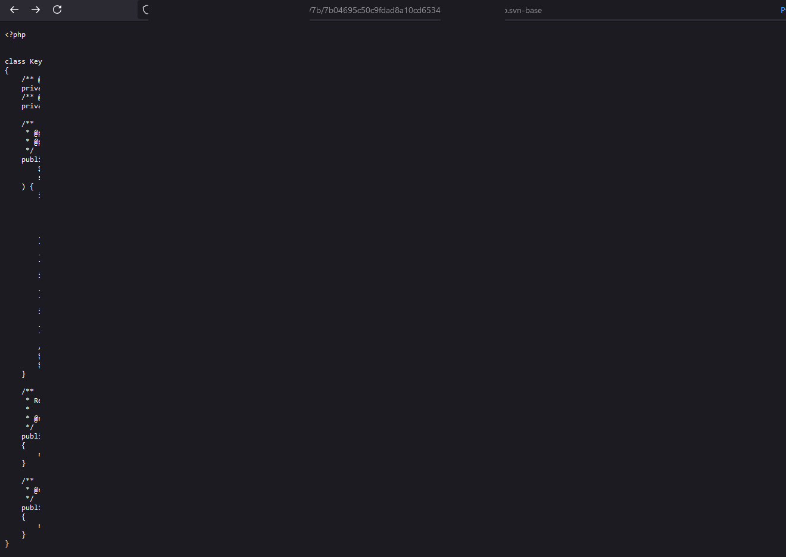
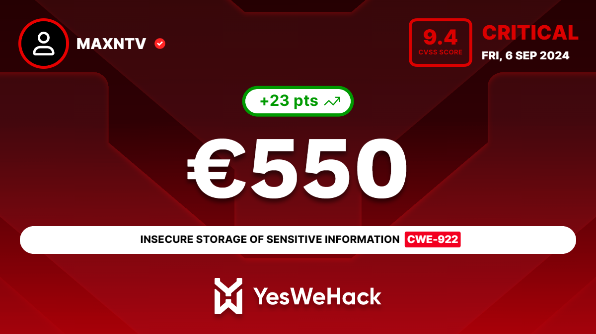

Just use Dirsearch to get Critical Bug
Discovered the Vulnerability
As a normal days, I used “Dirsearch” to scan directory of a target from a bug bounty program, I found a directory is “.svn/wc.db”.  At first I didn’t know what file this was so I asked my younger brother(aka CuongN) and he said svn like git also is version control system.
After read some blog, i know that:
In SVN (Subversion), the wc.db file is part of the internal structure of a Subversion working copy. It is a SQLite database that stores metadata related to the working copy, such as information about file versions, status, properties, and the relationship between the working copy and the repository. 
That means I can access all files of target via payload:
https://example.com/.svn/pristine/<XX>/<CHECKSUM>.svn-base
XX is the first 2 bytes of the checksum
POC
Private key  Source 
Reward
